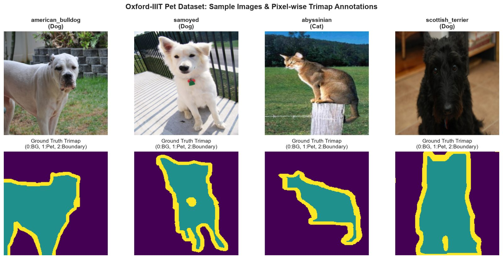

รู้จักข้อมูลก่อน แล้วจะเข้าใจว่าโมเดลพลาดเพราะอะไร
ชุดข้อมูล Oxford-IIIT Pet สร้างโดยกลุ่ม Visual Geometry Group มหาวิทยาลัยอ็อกซ์ฟอร์ด ร่วมกับ IIIT Hyderabad (Parkhi et al., CVPR 2012) เป็นภาพถ่ายหมาแมวจากอินเทอร์เน็ต 37 สายพันธุ์ ทุกภาพมีป้ายสายพันธุ์และ trimap ระดับพิกเซล
ตัวเลขสำคัญ
จำนวนภาพในแต่ละชุด แยกแมวและหมา
ชุด test ทางการใหญ่พอ ๆ กับ trainval และสัดส่วนหมา:แมวเท่ากันทั้งสองชุด
สายพันธุ์ส่วนใหญ่มี 100 ภาพใน trainval และ 100 ภาพใน test ที่มีน้อยกว่าคือ Bombay (96 + 88), Egyptian Mau (93 + 97), Staffordshire Bull Terrier (100 + 89), English Cocker Spaniel (96 + 100), Newfoundland (96 + 100) และ Abyssinian (100 + 98) ความต่างนี้เล็กพอที่ไม่ต้องถ่วงน้ำหนักคลาส trainval ถูกแบ่งต่อเป็น Train 2,944 / Val 736 แบบ stratified
ป้ายกำกับมีอะไรบ้าง
| ป้าย | อยู่ที่ไหน | ค่าที่เป็นไปได้ | ใช้ในงานนี้ |
|---|---|---|---|
| สายพันธุ์ | annotations/list.txt และชื่อไฟล์ | CLASS-ID 1–37 · ชื่อไฟล์ เช่น Bengal_12.jpg | ✓ หัวทายสายพันธุ์ |
| หมาหรือแมว | list.txt คอลัมน์ SPECIES | 1 = แมว, 2 = หมา · ชื่อไฟล์ขึ้นต้นตัวใหญ่ = แมว ตัวเล็ก = หมา | ✓ หัวทายหมาแมว (แปลงเป็น 0 = แมว, 1 = หมา) |
| Trimap | annotations/trimaps/*.png | 1 = ตัวสัตว์, 2 = พื้นหลัง, 3 = ไม่ระบุ (ขอบ) | ✓ แปลงเป็น 0 = พื้นหลัง, 1 = ตัวสัตว์, 2 = ขอบ |
| กรอบหัว (Head ROI) | annotations/xmls/*.xml แบบ PASCAL VOC | bounding box ของหัวสัตว์ · มีเฉพาะภาพ trainval (3,686 ไฟล์) | ✗ ไม่ได้ใช้ (ใช้ทำงาน detection ต่อได้) |

ลักษณะของภาพ
ด้านยาวที่สุดของภาพ (พิกเซล)
ภาพส่วนใหญ่ถูกย่อมาแล้วให้ด้านยาวราว 500 พิกเซล การย่อเหลือ 224 จึงเหลือความละเอียดราว 45% ต่อด้าน
สัดส่วนภาพ กว้าง ÷ สูง
เส้นตั้งคือจัตุรัส (1.0) ภาพที่พบมากที่สุดคือแนวนอน 4:3 และ 3:2 รองลงมาคือแนวตั้ง 2:3 และ 3:4 ทุกภาพถูกบีบเป็นจัตุรัสก่อนเข้าโมเดล
สัดส่วนพิกเซลแต่ละคลาสของ trimap (เฉลี่ยทุกภาพ)
พื้นหลังมากกว่าขอบราว 5 เท่า และขอบเป็นแถบบาง จึงใส่ Dice loss ให้ทุกคลาสมีน้ำหนักเท่ากัน
ดูเป็นตาราง
| คุณสมบัติ | ค่า | ผลต่อการออกแบบ |
|---|
สายพันธุ์ไหนยาก: จำแนก vs ระบายสี
แต่ละจุดคือหนึ่งสายพันธุ์ แกนนอนคือ IoU ของตัวสัตว์ (ระบายสีดีแค่ไหน) แกนตั้งคือ F1 ของการทายสายพันธุ์ ทั้งหมดวัดบน test ชี้ที่จุดเพื่อดูตัวเลข และกดเพื่อเปิดรายละเอียดสายพันธุ์นั้น
ผลรายสายพันธุ์บน test
ดูเป็นตาราง
| สายพันธุ์ | ชนิด | F1 | Recall | Pet IoU |
|---|
10 คู่ที่โมเดลทายสลับบ่อยที่สุด
จำนวนภาพ test ที่สายพันธุ์จริง (ซ้าย) ถูกทายเป็นอีกสายพันธุ์ · ป้าย "ข้ามชนิด" คือแมวกับหมาสลับกัน
อะไรทำให้ชุดข้อมูลนี้ยาก
- Fine-grained: ต่างกันที่รายละเอียดเล็ก ๆ
การแยกหมากับแมวง่าย (โมเดลได้ 99.5%) แต่การแยก 37 สายพันธุ์ต้องดูลายขน รูปหู สัดส่วนหน้า ซึ่งบางคู่ต่างกันน้อยมาก
- สายพันธุ์เดียวกันหน้าตาต่างกันได้มาก
British Shorthair มีหลายสี หมาบางพันธุ์ตัดขนต่างกัน ลูกสัตว์กับตัวโตหน้าตาไม่เหมือนกัน ท่าทางและมุมกล้องหลากหลาย
- ภาพถ่ายจริงจากอินเทอร์เน็ต
มีคน เฟอร์นิเจอร์ ของเล่น หรือสัตว์หลายตัวในภาพ บางภาพเห็นแค่หัว บางภาพเห็นทั้งตัว
- ขอบกำกวมโดยธรรมชาติ
ขนยาว (Persian, Samoyed) หรือขนสีเดียวกับพื้นหลัง (Bombay, Newfoundland บนพื้นมืด) ทำให้ขอบตัวไม่ชัด ชุดข้อมูลจึงติดป้ายบริเวณนี้ว่า "ไม่ระบุ"
- บางสายพันธุ์ต่างกันที่ขนาดตัว
American Pit Bull Terrier กับ Staffordshire Bull Terrier ต่างกันหลัก ๆ ที่ความสูงและน้ำหนัก ภาพเดี่ยวที่ไม่มีวัตถุอ้างอิงขนาดจึงแยกยาก
กลุ่มสายพันธุ์ที่หน้าตาคล้ายกัน
จัดกลุ่มตามลักษณะที่มองเห็นจากภาพ คอลัมน์ขวาคือจำนวนภาพ test ที่โมเดลทายสลับกันภายในกลุ่ม (นับทั้งสองทิศ) กดชื่อสายพันธุ์เพื่อดูรายละเอียด
| กลุ่ม | สายพันธุ์ | ลักษณะร่วม | วิธีแยก | ทายสลับใน test |
|---|
แคตตาล็อก 37 สายพันธุ์
ภาพตัวอย่างทุกภาพมาจากชุด test ตัวเลขที่มุมขวาคือ F1 ของสายพันธุ์นั้น (สีแดงเมื่อต่ำกว่า 80%) กดที่ภาพเพื่อดูลักษณะเด่น ผลรายละเอียด และแหล่งอ้างอิง
สายพันธุ์นอกชุดข้อมูลที่หน้าคล้าย
โมเดลรู้จักแค่ 37 สายพันธุ์ ถ้าเจอสายพันธุ์อื่นจะทายเป็นหนึ่งใน 37 สายพันธุ์เสมอ (closed-set) รายการนี้ใช้เตรียมภาพสาธิตและตอบคำถามว่า "ถ้าเป็นสายพันธุ์อื่นจะเกิดอะไรขึ้น" แต่ละการ์ดบอกว่าน่าจะถูกทายเป็นสายพันธุ์ไหน รวมสายพันธุ์ไทย 4 สายพันธุ์
ความคล้ายในรายการนี้ประเมินจากลักษณะที่มองเห็น ยังไม่ได้ทดสอบกับโมเดล ยกเว้น Akita ที่มีผลใน notebook ใช้หน้า ทดลองโมเดล ลองกับภาพจริงได้
แหล่งอ้างอิง
| ข้อมูล | แหล่ง |
|---|---|
| ชุดข้อมูล ป้ายกำกับ และการแบ่ง trainval/test | Oxford VGG · The Oxford-IIIT Pet Dataset · Parkhi et al., "Cats and Dogs", CVPR 2012 · ไฟล์ annotations/README |
| ลักษณะสายพันธุ์หมา | American Kennel Club (AKC) · United Kennel Club (UKC) สำหรับ American Bulldog และ American Pit Bull Terrier ที่ AKC ไม่รับขึ้นทะเบียน |
| ลักษณะสายพันธุ์แมว | The Cat Fanciers' Association (CFA) |
| ต้นกำเนิดและประวัติ | Wikipedia ภาษาอังกฤษ (ลิงก์รายสายพันธุ์อยู่ในแผงรายละเอียดของแต่ละการ์ด) |
| สถิติภาพ ผลรายสายพันธุ์ และภาพตัวอย่าง | คำนวณจากชุดข้อมูลและ checkpoint best_model_resnet50.pth บน test ทางการ (ดู docs/625b755/REVIEW.md) |
ตรวจลิงก์ทุกลิงก์เมื่อ 16 ต.ค. 2026 · สรุปลักษณะเป็นภาษาไทยโดยทีม ไม่ได้แปลตรงจากต้นฉบับ